The problem
Verifying a vehicle controller produces two things: evidence that each requirement holds, and the scripts that produced it. Both rot.
- Scripts become code only their author can review
- Results live in spreadsheets, detached from the software, test code and bench that produced them
- Rerunning a test "the same way" is a matter of hope
- Hardware time is scarce, and every test boots the rig from scratch
Four commitments
Scripts are documents
A script is reStructuredText. Prose says what is tested and why; rvt blocks hold the steps. It renders as a readable procedure a reviewer can sign off.
Requirements are the unit of progress
Scripts cite the requirements they verify. Reports roll every run up to them: green, red, partial or untested.
Every run is reproducible
A run records its closure, variation, UUT versions and the environment's fingerprint. Its identity is their hash; a rerun matches it or says it didn't.
Hardware stays warm
Scripts say what state they need, and how to get there. Workers run the job that fits the bench as it is, before reinstalling anything.
The big picture
Who does what
Script writer
Writes scripts in rst and a small Lisp (edn), using definitions and blocks. Reads results against requirements.
Block developer
Writes BuildingBlocks, UUT and environment plugins in Python: the vocabulary scripts speak.
Operator
Runs the server and workers, imports requirements, queues reports and reads their rollups.
The split matters: script writers never touch Python, and blocks decide how they read on the page.
A script is a document
================================
Landing Within The Gear's Limits
================================
Flies each mission down from powered descent initiation,
and from high gate, and checks the touchdown.
Requirements
------------
1. :req:`MSN-001`
2. :req:`LM-LDG-001`
Steps
-----
.. rvt:: Down to the surface
(FlyTo :contact)
(Verify contact-light = true)
(land-and-keep "descent")
.. rvt:: The touchdown
(Verify (abs (Read touchdown.vz)) <= touchdown-vz-limit)
(Verify cwea.caution = false)
- Prose is reStructuredText: what is tested, and why
:req:cites a requirement; reports roll up to it- Each
.. rvt::block holds steps; a title makes it a named step on the page - Every form in a block is a step, a definition or a directive
- Unwritten steps are
(TBD "…"): a script can be planned before it runs
…and it renders as one
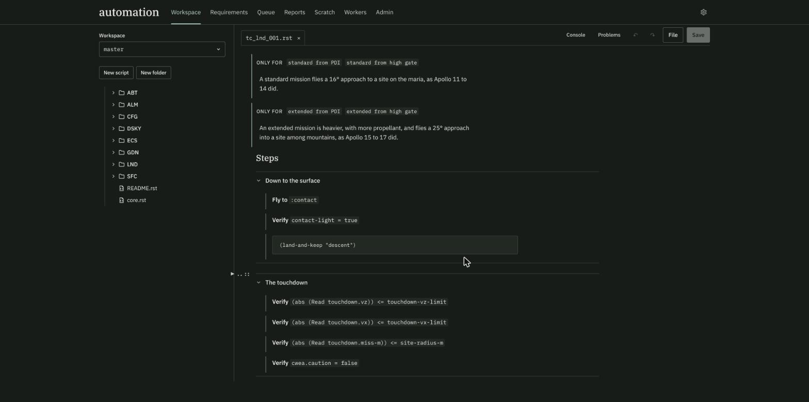
Blocks render themselves: (FlyTo :contact) becomes Fly to :contact; rvt-variant prose shows only for its variations
Where you start: a line per step
Most of a script is steps: call a block, give it some arguments. Today that's one line each:
StartLM standard pdi
FlyTo contact
Verify lm.contact = true
Verify lm.touchdown.vz <= 3.05
- The first word names the block
- The rest is split like a shell command (
shlex) and handed over as strings - Every block parses its own strings, its own way
Where you start: a form per step
The same steps in automation-v3:
(StartLM {:mission :standard :start :pdi})
(FlyTo :contact)
(Verify contact-light = true)
(Verify touchdown.vz <= 3.05)
- Same shape: the block first, then its arguments, now in parentheses
- It still reads as a procedure; each form is still one step on the page and in the run
- What changed is what's inside the parentheses: values, not strings
Arguments have types
The language is edn, Clojure's data notation. A block gets the value you wrote, not text it has to parse.
| Line-based, a string | Now, a value | Type |
|---|---|---|
3.05 | 3.05 | number |
true | true | boolean |
contact | :contact | keyword: a name from a fixed set |
15min | 15min, 500ms | time |
"Fly to touchdown" | "Fly to touchdown" | string, quoted only when it is one |
| no way to say it | [1 2 3], {:mission :standard} | vector, map |
- Blocks say what shape of arguments they accept, and it's checked before anything runs
- That's all a script writer needs to know about types
Name it once: def
A number from a requirement, typed into every script that checks it:
# LND/landing.txt
Verify lm.touchdown.vz <= 3.05
# LND/high_gate.txt
FlyTo contact
Verify lm.touchdown.vz <= 3.05
# ABT/abort.txt
Verify lm.deca.throttle = 92.5
Verify lm.touchdown.vz <= 3.5
- Which requirement is
3.05? The line doesn't say - When the requirement changes, every copy has to be found
- A typo is just a different number, and still passes
Name it once: def
;; rvts/core.rst: numbers from the requirements
(def touchdown-vz-limit 3.05)
(def touchdown-vx-limit 1.22)
(def full-throttle 92.5)
(def loaded-propellant {:standard 8200 :extended 9000})
;; …and the system's connectors
(def touchdown (connector "lm.touchdown"))
;; a script
(Verify touchdown.vz <= touchdown-vz-limit)
- Defined once, in a
core.rstevery script under it loads; the prose around it says where it comes from - The name says what the number is; the run shows both the name and the value it read
- A misspelled name is an error before the run:
unknown name touchdown-vz-limt; did you mean touchdown-vz-limit? - This is the main reason for the new syntax: a line of shell words has nowhere to name anything
Group steps: defn
(defn boot [mission start]
(StartLM {:mission mission :start start}))
(defn land-and-keep [label]
(step "Fly to touchdown and attach the trajectory"
(FlyTo :touchdown)
(AttachTrajectory label)))
(defn landed-within-limits? []
(and (Read landed)
(<= (abs (Read touchdown.vz)) touchdown-vz-limit)
(<= (abs (Read touchdown.vx)) touchdown-vx-limit)))
;; in a script
(land-and-keep "descent")
(Verify (landed-within-limits?))
- A sequence of steps every script repeats becomes one named call, with parameters
- Transparent: its blocks still report one by one, under the step that called it
stepgives a group its own title on the page and in the run- Predicates read like the requirement they check
- Written in the script language, by script writers: no Python, no new block to review
Where definitions live
rvts/
core.rst (uut :lm) (environments :sim :lms)
connectors, limits, boot…
LND/
core.rst land-and-keep
tc_lnd_001.rst ← loads both core.rst files
- A script loads every
core.rstfrom the root down to its folder, then any it(import …)s: its closure (uut …)and(environments …)say what a script tests and where it can run- The closure is resolved and checked statically: unknown names, wrong calls, bad block arguments
- The same checks give the editor its errors, hover and completion
- There's more when you need it (
let,if,fn, maps), but most scripts are steps, names and a fewdefns
Blocks: what passes or fails
A BuildingBlock is a Python class scripts call by name. Blocks are what pass or fail.
| Kind | Examples |
|---|---|
| Assertion | Verify, Wait, VerifyAny |
| Value | Read, SetValue, SetFixedValue |
| Action | StartLM, FlyTo, Keys, ClickROD |
| Placeholder | TBD |
- The first failing block stops its step, and the step stops the script
try-ok?,try,quietly,stepshape what is reported
(Verify nav.mode = :run)
(Verify (abs (Read touchdown.vx)) <= 1.22)
(Verify nav.time within? 10 20) ; your own predicate
(Wait landed = true :within 15min)
(Wait eps.soc >= 80.0 :within 3h :every 1min)
(Wait 2s)
Each check shows the values it read:touchdown.vx (0.0) <= 1.22
Writing a block
class FlyTo(BuildingBlock):
"""Let the flight run until it reaches a phase.
Examples::
(FlyTo :high-gate)
(FlyTo :touchdown :within 900)
"""
kind = ACTION
def check_syntax(self, *args):
return len(args) in (1, 3) and isinstance(args[0], edn.Keyword)
def execute(self, phase, _within=None, limit=1500):
if not lm().fly_to(phase, limit):
return BlockResult(False, stderr=f"didn't reach {phase} within {limit} s")
now = lm().read_point("lm.time.sim")
return BlockResult(True, stdout=f"reached {phase} at {now:g} s")
def as_rst(self, phase, *rest):
return markup.line(markup.strong("Fly to"), markup.code(phase))
- The docstring is the documentation script writers see, on hover and in the generated reference
check_syntaxruns statically: a bad call can't be queuedexecutereturns aBlockResult: passed, stdout, data, filesas_rstis how the call reads on the page- Blocks reach the UUT through its handle, bound to the UUT's name
Refs: the values of the system
(def eps (connector "lm.eps"))
(def bench (connector "lm.bench"))
(Read eps.bus-volts) ; a number
(SetValue panel.engine-stop true) ; once
(SetFixedValue bench.bus-load-amps 200) ; held…
(ClearFixedValue bench.bus-load-amps) ; …until released
(def cpu (group cpu1 cpu2))
(Verify cpu.app.nav.mode = :run) ; every member
(VerifyAny cpu.role = :primary)
- A ref names a value somewhere else: a point of the UUT, an input of the bench
- Scripts declare a few roots and reach everything with dotted names; the editor completes the paths
- Each plugin brings its own kind of ref (the lunar module's are connectors) and implements
Readand the value blocks for it - Whatever a script leaves fixed is released when it ends, however it ends
- Groups test redundant units together, and say which member disagreed
- Every run lists the values it touched, and which steps touched them
UUTs: what is tested
class LunarModule(UUT):
name = "lm"
def list_versions(self):
# LUM099, LUM131, LUM210: each digested from its rope
return [Version(id, digest(rope)) for id, rope in RELEASES.items()]
def installed_version(self, env): ...
def install(self, version, env): ...
def start(self, version, env): ...
def handle(self, version, env):
return LunarModuleHandle(self, env)
- A UUT plugin lists versions, installs one into an environment, starts it, and hands scripts a handle
- A
Versionhas an id people pick and a digest of the exact bits - Optional: find a developer's local build and upload it, for scratch runs
- UUTs are left as the last job left them: that's what makes warm scheduling possible
Environments: where it runs
class Sim(Environment):
"""The lunar module in software, stepped"""
name = "sim"
def fingerprint(self):
return {"environment": self.name,
"python": platform.python_version(),
"lm-model": MODEL_VERSION}
class Lms(Sim):
"""The mission simulator: real time × pace"""
name = "lms"
{"environments": {
"sim": {"workdir": "/var/lib/automation/sim"},
"lms": {"workdir": "/var/lib/automation/lms", "pace": 20}}}
- A simulator, a bench, a rig. A worker hosts one or more, from its config
- The fingerprint: tool versions, serial numbers, calibration. Hashed into every run's identity
- Each environment gives the run its clock:
simsteps the simulation, so a 12-minute descent waits for nothinglmsruns on its own, 20× real time- hardware keeps the wall clock
- Scripts say where they can run:
(environments :sim :lms)
Versions and variations
Version: what install puts in the environment. For the LM, the Luminary rope.
Variation: how a run sets the UUT up, chosen by the script: the mission, the start point, the crew.
(variations "mission start"
["standard from PDI" [:standard :pdi]
"standard from high gate" [:standard :high-gate]
"extended from PDI" [:extended :pdi]
"extended from high gate" [:extended :high-gate]])
4 variations × 2 environments = 8 runs, against the versions a report picks
- Variation symbols are bound for the whole script: steps, preconditions, definitions
rvt-variantsections and:variations:blocks hold what only some variations need- Table blocks are the other axis: cases that run one after another on the same flight are rows, all in one run
- The queue can filter with an edn predicate:
(= mission :extended)
Preconditions and warm scheduling
(Precondition "LM booted for the variation's mission"
(lm-ready? mission start)
:heal "Boot the variation's mission at its start point"
(boot mission start))
- A check, and an optional heal that establishes it
- If the heal can't (LUM099 rejects an extended load), the run is blocked, not failed: the test never ran
Jobs that need the same state run back to back on a warm bench.
Outcomes
| Outcome | Means | In the example |
|---|---|---|
| pass | every step passed | most of the set on LUM210 |
| fail | an assertion came out false | ALM/tc_alm_003 extended, on LUM131: its invented defect |
| error | something raised: a block, or the script's own code | a block that raised: a connector the UUT doesn't have |
| blocked | a precondition couldn't be established | extended missions on LUM099 |
| incomplete | passed as far as it is written; reached a (TBD) | GDN/tc_gdn_007, the ECS flows |
| refuses to queue | static checks failed: it can't run at all | DSKY/tc_dsky_005: a precondition after a step |
A requirement is green only when every combination linked to it passed.
Every run is evidence
- The closure: the script and every file it loaded, as checked in, copied into the run and hashed
- The variation: its name and the values it bound
- UUT versions: id and digest, installed or found installed
- The environment fingerprint, plus the framework's own version and commit
- Two runs with the same identity ran the same test on the same configuration
- A rerun is refused if no live environment matches the original fingerprint
- Freezing a report builds it as a document, from the report's own rst: a PDF and a static site
The example: Apollo's powered descent
The only demo code shipped: a small simulation of the lunar module and its guidance computer, the lm UUT. It really flies. A standard descent lands at 12:10, 2.4 m/s, 24 m from the site.
| Version | What it is for |
|---|---|
LUM099 | no extended missions: those runs are blocked |
LUM131 | an invented defect that one check catches |
LUM210 | the fix; the default |
28 scripts and 50 requirements in three specs (mission, lunar module, guidance software), with a DOORS history from Release 1 to Release 2
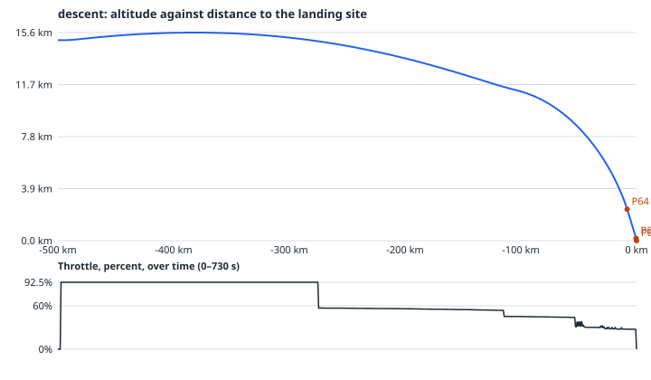
A run's attachment: the descent, plotted by AttachTrajectory
The workspace
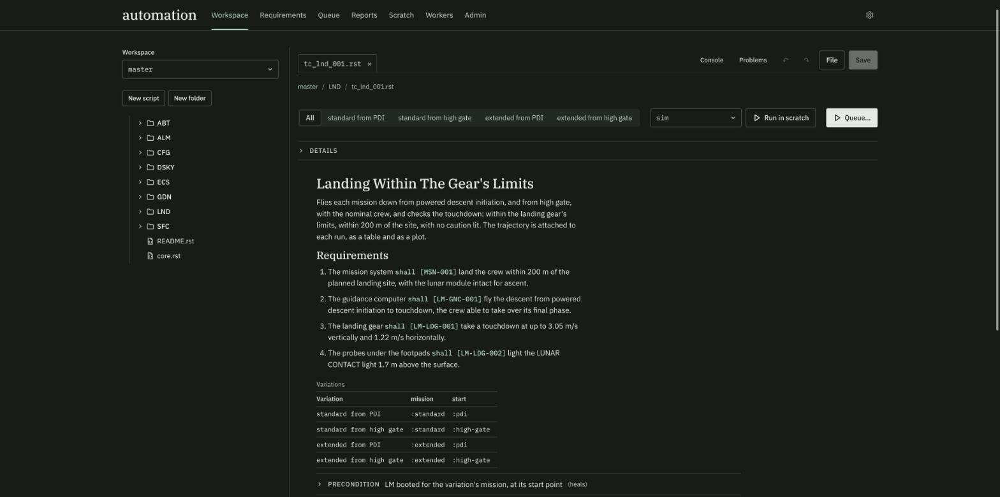
A git worktree's scripts, open in tabs. The variation picker switches the page between variations; Run in scratch and Queue… sit beside it
Editing, a card at a time
- A script is cut into cards: prose sections, blocks, variants. Click one to edit it; only edited cards are rewritten on save
- A language server checks as you type, unsaved edits included: errors underlined, a Problems panel, counts in the tree
- Ctrl+Space completes blocks, definitions, handles, variation values, and the paths below a ref
- Hover says what a name is; the line below shows how the call is made
- The same server speaks LSP:
automation-v3 lspin any editor
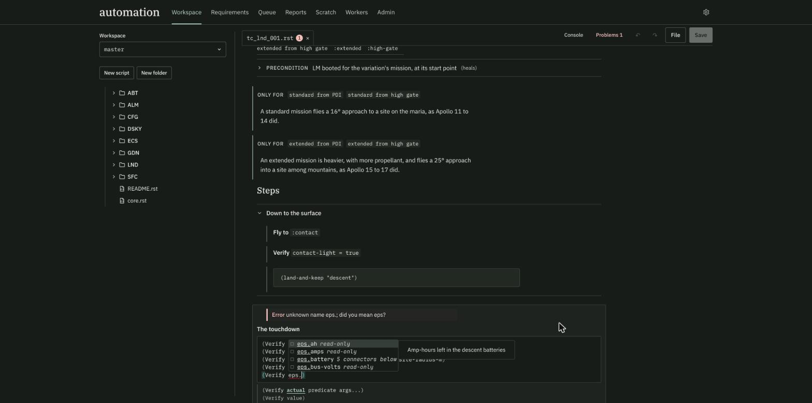
The console: try it as you write it
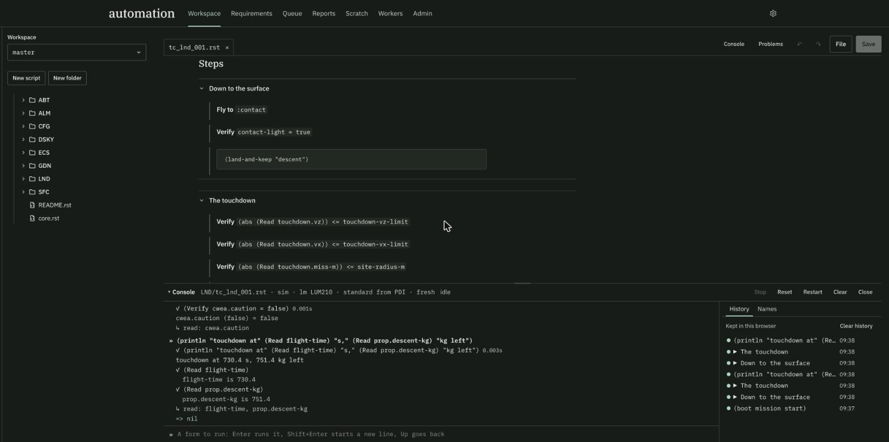
▶ runs a block; Shift+Enter runs the form at the cursor; the prompt runs anything. Against the real UUT on this machine, kept between commands, recorded nowhere.
History and names
- The page becomes a workbench: full width, cards above, console below, resizable
- History: everything run, with its outcome; run it again as it was, or edit it in the prompt
- Names: what the scope holds, by where it came from: UUT handles, the variation, the console, each
core.rst - A failure links to the line of the block it came from
- Reset reloads definitions; Restart starts the UUT fresh; Stop ends a long
Wait
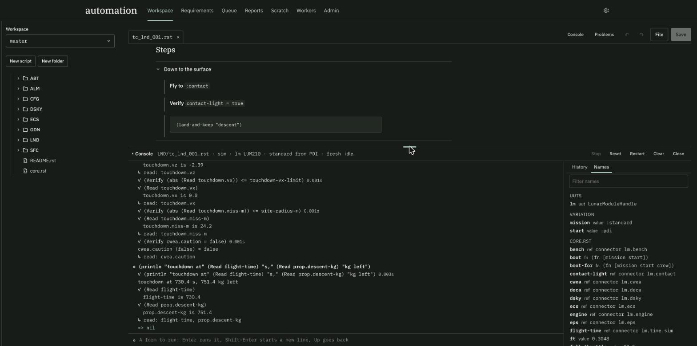
Scratch runs
- Run in scratch runs a script as it is on disk, edits included, outside any report
- The workspace marks scripts with uncommitted edits: In work, Checked in, Changes
- Reports only ever run what is checked in; scratch is where work in progress runs
- From the local client, a scratch run goes to the central server's benches, or to this machine
- A developer's local build is found, offered for upload, and runs in scratch, never in a report
# no server at all: run, print, exit non-zero on failure
automation-v3 run ALM/tc_alm_003.rst \
--root automationv3/examples/apollo/rvts \
--config demo/worker.json \
--env sim --variation extended --uut lm=LUM131
That one fails on purpose: LUM131's defect.
Requirements
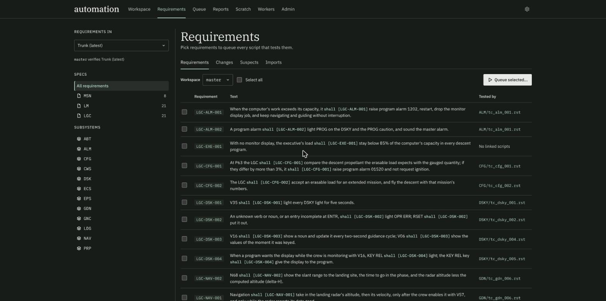
Imported from DOORS exports (or a CSV, a spreadsheet, a list), by spec and subsystem, each with the scripts that cite it. Pick some and Queue selected…
Queuing a report
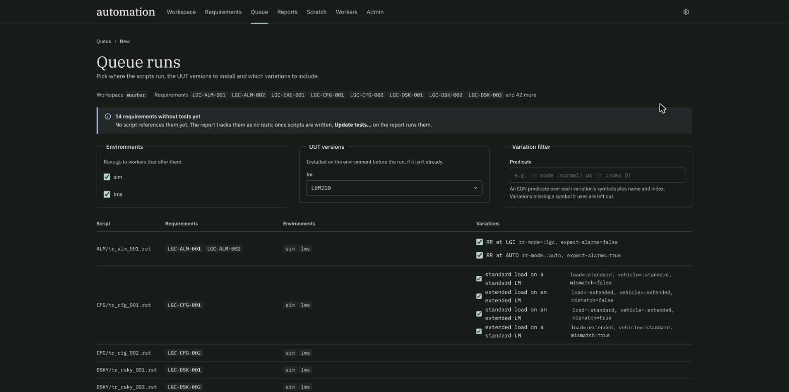
Environments, the version of each UUT, a variation filter, and every script × variation it will run. Requirements without tests yet are tracked as no tests.
Reports roll up to requirements

Subsystem → requirement → script, each with its state. The whole set on LUM131: 28 green, 3 red. Add requirements, Update tests, Freeze, edit the report's own document.
A run says why
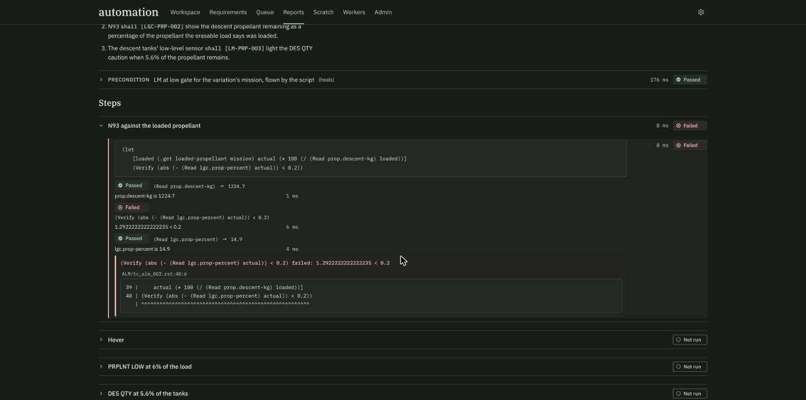
Each step and the calls it made, with the values read; the failure, the code it happened at, marked, and the steps it never reached. Files blocks attached are listed with the step.
Requirements change: changes and suspects
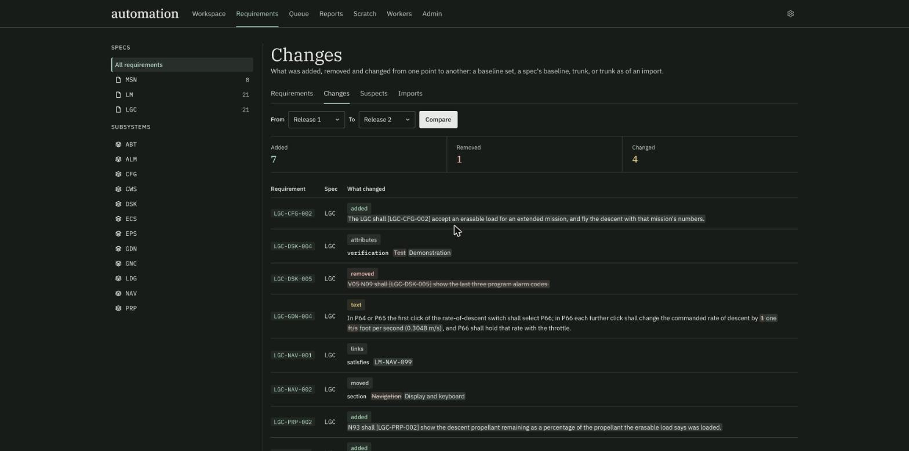
Any two points (baseline sets, a spec's baselines, trunk) compared: added, removed, reworded, moved
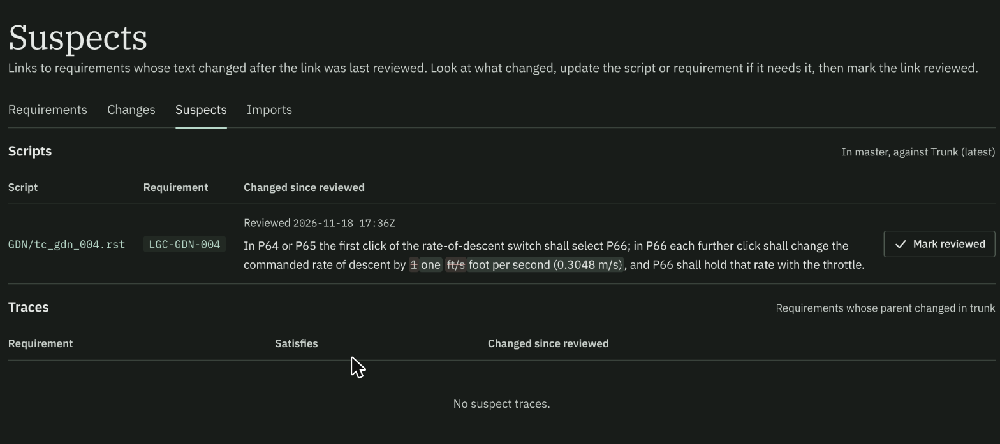
A script whose requirement changed since the link was reviewed is suspect, until someone looks and marks it reviewed
Deployment
--config, a worker of its ownrequirements, sign-in ▶
stream results
- Workers sit next to the hardware and pull; the server never calls them
- The server mirrors the team's git remote; reports run what was pushed
- One process can be all of it:
automation-v3 server --local-worker, or the demo
Try it
python -m venv .venv && source .venv/bin/activate
pip install -e ".[docs]"
automation-v3 demo # http://localhost:8080
- Workspace: open
LND/tc_lnd_001.rst; switch variations; open the console and ▶ a block - Queue… it: each run attaches the flight's trajectory
- Requirements: queue Release 2 on
LUM131and watch the rollup go red; queue it again onLUM210 - Requirements → Changes: Release 1 against Release 2
The docs: docs/, served at /docs by the demo